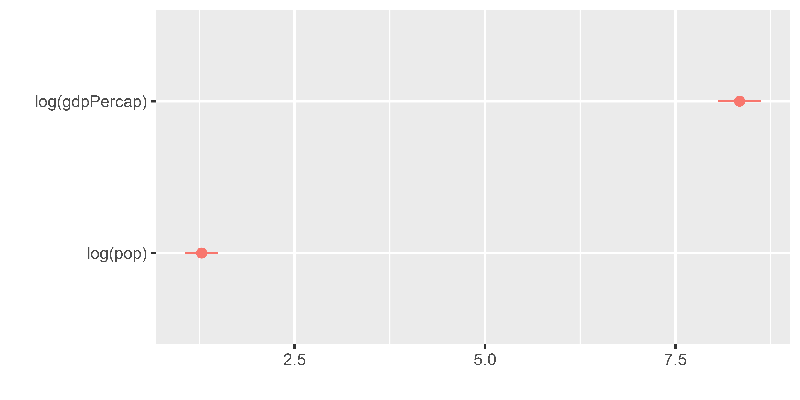
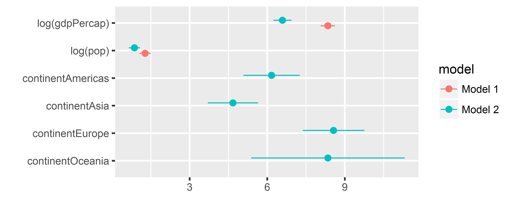
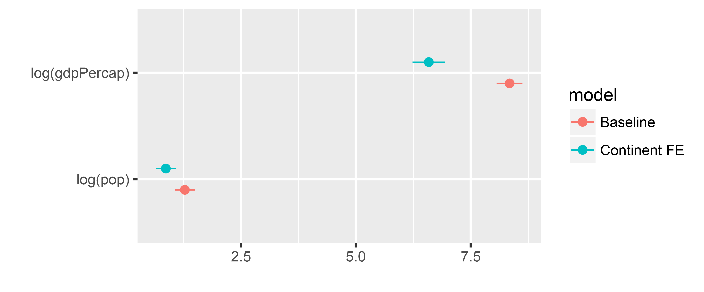
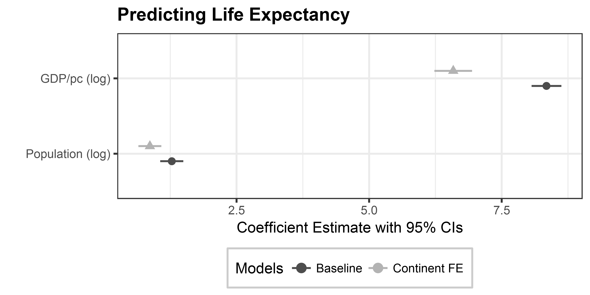
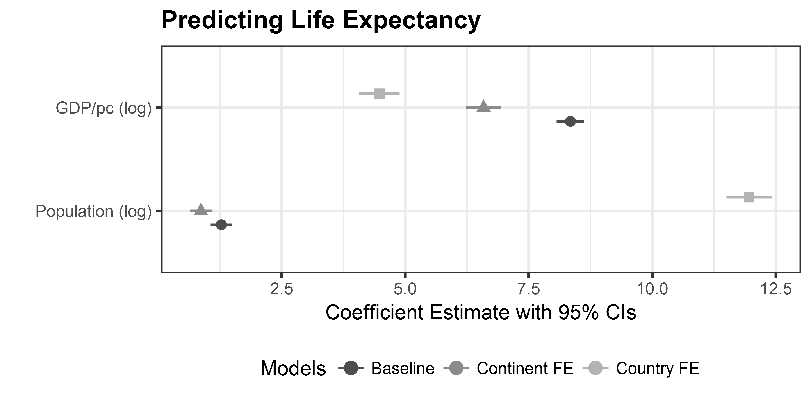

Session 4: Coefficient plots
Coefficient plots
Coefficient plots (“dot-and-whisker” plots) are a useful way to visualize regression models:
- No asterisks/superscripts necessary to display statistical significance
- Uncertainty better visualized through confidence intervals
- Effect size becomes more clear

For more information, see Kastellec and Leoni 2007
The dotwhisker package: basic usage
In R, we use the dotwhisker package by Frederik Solt and Yue Hu to generate coefficient plots. The dotwhisker package builds on the ggplot2 architecture, which makes it easy to use.
Basic Usage:
library(tidyverse)
library(dotwhisker)
library(gapminder)
# regress lifeExp on gdpPercap + population
m1 <- lm(lifeExp ~ log(gdpPercap) + log(pop), data = gapminder)
dwplot(m1)The dotwhisker package: basic usage

Plot multiple models
m1 <- lm(lifeExp ~ log(gdpPercap) + log(pop), data = gapminder)
# add predictors: continent fixed effects
m2 <- lm(lifeExp ~ log(gdpPercap) + log(pop) + continent, data = gapminder)
dwplot(list(m1, m2)) 
tidy models
Instead of passing an lm model object, we can transform our model object(s) into tidy data frames, using the broom package. This has several advantages, including omitting coefficients from the output, that might not be needed in the final plot.
library(broom)
# Estimate models
m1 <- lm(lifeExp ~ log(gdpPercap) + log(pop), data = gapminder)
m2 <- lm(lifeExp ~ log(gdpPercap) + log(pop) + continent, data = gapminder)
# transform model objects into data frames
m1_tidy <- tidy(m1) # 'tidy()' function is from the broom package
m2_tidy <- tidy(m2)
m1_tidy## term estimate std.error statistic p.value
## 1 (Intercept) -28.771380 2.0756093 -13.86165 1.778729e-41
## 2 log(gdpPercap) 8.344175 0.1434062 58.18558 0.000000e+00
## 3 log(pop) 1.279164 0.1109215 11.53215 1.116612e-29tidy models II
library(broom)
# Estimate models
m1 <- lm(lifeExp ~ log(gdpPercap) + log(pop), data = gapminder)
m2 <- lm(lifeExp ~ log(gdpPercap) + log(pop) + continent, data = gapminder)
# transform model objects into data frames
m1_tidy <- tidy(m1)
# add model name to tidy data frame
m1_tidy <- m1_tidy %>%
mutate(model = "Baseline")
# repeat for model 2
m2_tidy <- tidy(m2)
m2_tidy <- m2_tidy %>%
mutate(model = "Continent FE")
# "glue" model data frames together
all_models <- bind_rows(m1_tidy, m2_tidy)tidy models II
## term estimate std.error p.value model
## 1 (Intercept) -28.7713800 2.0756093 1.778729e-41 Baseline
## 2 log(gdpPercap) 8.3441753 0.1434062 0.000000e+00 Baseline
## 3 log(pop) 1.2791640 0.1109215 1.116612e-29 Baseline
## 4 (Intercept) -12.0146144 2.2658349 1.292082e-07 Continent FE
## 5 log(gdpPercap) 6.5866883 0.1815170 6.767845e-214 Continent FE
## 6 log(pop) 0.8658512 0.1105711 8.479925e-15 Continent FE
## 7 continentAmericas 6.1684162 0.5554629 1.041386e-27 Continent FE
## 8 continentAsia 4.6738187 0.4944597 1.058548e-20 Continent FE
## 9 continentEurope 8.5618690 0.6075964 9.958829e-43 Continent FE
## 10 continentOceania 8.3448995 1.5133508 4.044070e-08 Continent FEtidy models III
# keep only the coefficients with "log" in the name, i.e. the GDP and population
all_models <- all_models %>%
filter(grepl("log", term))
all_models## term estimate std.error statistic p.value model
## 1 log(gdpPercap) 8.3441753 0.1434062 58.185578 0.000000e+00 Baseline
## 2 log(pop) 1.2791640 0.1109215 11.532152 1.116612e-29 Baseline
## 3 log(gdpPercap) 6.5866883 0.1815170 36.286895 6.767845e-214 Continent FE
## 4 log(pop) 0.8658512 0.1105711 7.830722 8.479925e-15 Continent FEtidy models IV
Plot the resulting tidy data frame with dwplot()
dwplot(all_models)
Manipulating dwplot output
# relabel predictors, because we want nicer variable names
all_models <- all_models %>%
relabel_predictors(c(`log(gdpPercap)` = "GDP/pc (log)",
`log(pop)` = "Population (log)"))
# adjust colors + shapes
coefplot_allmodels <- dwplot(all_models,
# here are our regular aesthetics
dot_args = list(aes(colour = model,
shape = model)),
size = 3) +
theme_bw() +
labs(title = "Predicting Life Expectancy",
x = "Coefficient Estimate with 95% CIs",
y = "") +
theme(plot.title = element_text(face="bold"),
legend.position = "bottom",
legend.background = element_rect(colour="grey80"),
legend.title.align = .5) +
scale_shape_discrete(name ="Models", breaks = c(0, 1)) + # breaks assign shapes
scale_colour_grey(start = .3, end = .7, name = "Models") # start/end for light/dark greysManipulating dwplot output

Exercise
Add a third model to all_models that includes country fixed effects. (Hint: you can add country dummies in R by simply adding the name of a categorical variable into the lm() call).
The baseline model stays
lm(lifeExp ~ log(gdpPercap) + log(pop), data = gapminder)
Plot the comparison of a the baseline model, the continent FE, and the country FE model.
Solution I
# Model Estimation and data preprocessing
m1 <- lm(lifeExp ~ log(gdpPercap) + log(pop), data = gapminder)
m2 <- lm(lifeExp ~ log(gdpPercap) + log(pop) + continent, data = gapminder)
m3 <- lm(lifeExp ~ log(gdpPercap) + log(pop) + country, data = gapminder)
# tidy models
m1_tidy <- tidy(m1) %>%
mutate(model = "Baseline")
m2_tidy <- tidy(m2) %>%
mutate(model = "Continent FE")
m3_tidy <- tidy(m3) %>%
mutate(model = "Country FE")
# 'glue' the models together
all_models <- bind_rows(m1_tidy,
m2_tidy,
m3_tidy) %>%
filter(grepl("log", term))Solution II
# relabel predictors
all_models <- all_models %>%
relabel_predictors(c(`log(gdpPercap)` = "GDP/pc (log)",
`log(pop)` = "Population (log)"))
# adjust colors + shapes
coefplot_allmodels <- dwplot(all_models,
dot_args = list(aes(colour = model,
shape = model)),
size = 3) +
theme_bw() +
labs(title = "Predicting Life Expectancy",
x = "Coefficient Estimate with 95% CIs", y = "") +
theme(plot.title = element_text(face="bold"),
legend.position = "bottom",
legend.title.align = .5) +
scale_shape_discrete(name ="Models", breaks = c(0, 1)) +
scale_colour_grey(start = .3, end = .7, name = "Models") Solution III
print(coefplot_allmodels) 